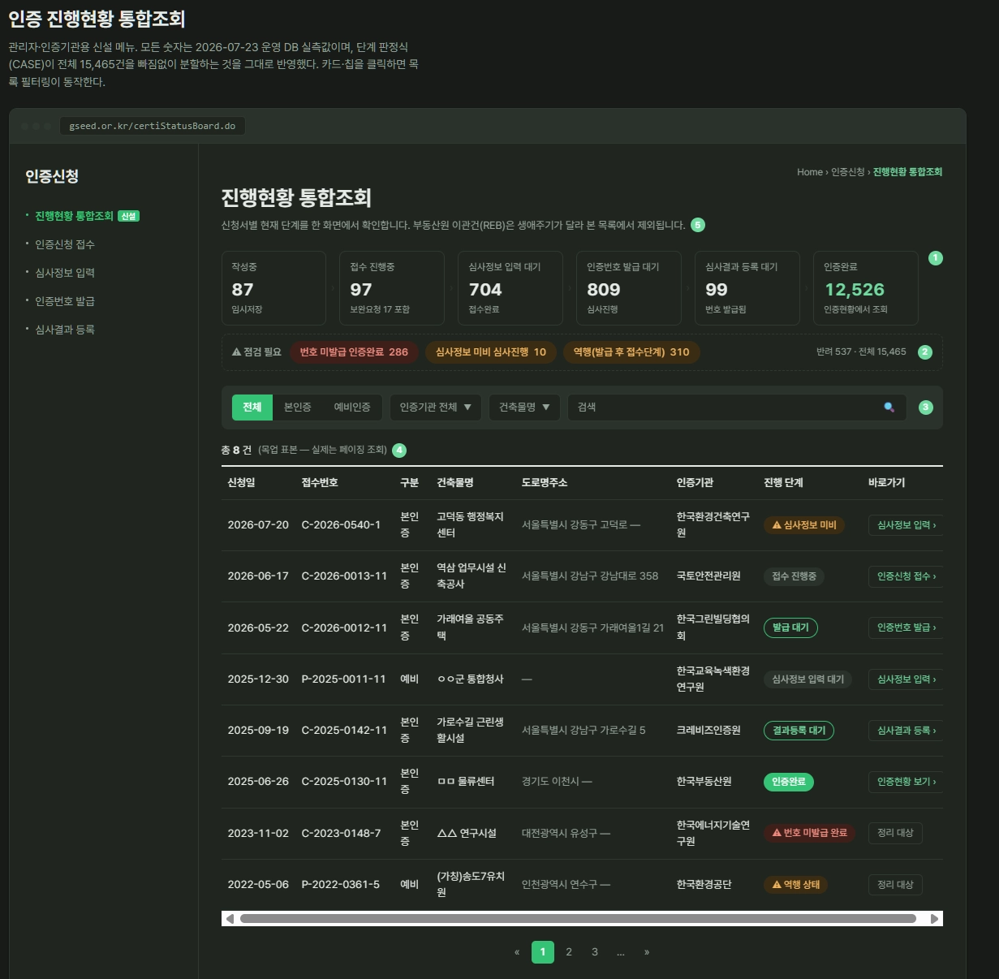
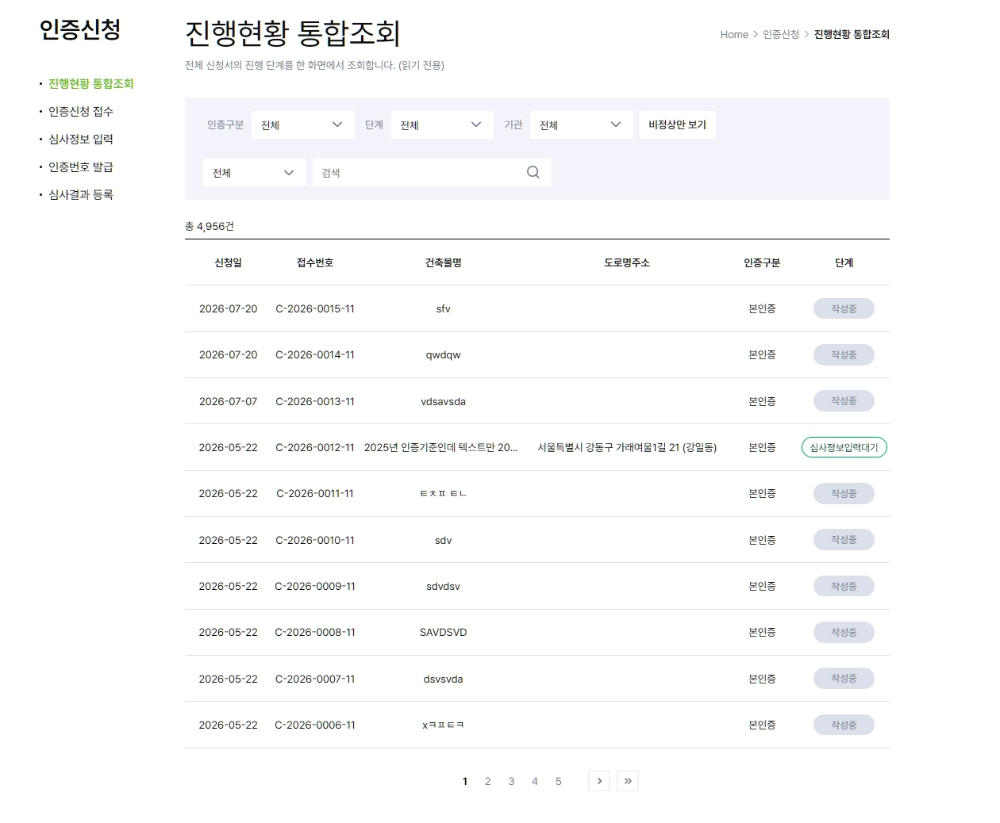

디자인 팀처럼 묻고,
디자인 팀처럼 진행합니다.
한 줄로 요청하면 리서치·전략·제작·검수가 순서대로 움직입니다.
INSTALL
/plugin marketplace add bs-koo/gx-design
/plugin install gx-design@gx-design
gx-design
예시
공공기관 에너지 감축 캠페인 사이트 UX/UI
만들기 전에 몇 가지 여쭙겠습니다
Q. 핵심 사용자는 누구인가요?
기관 담당자
일반 시민
Q. 무엇을 먼저 보여줄까요?
감축 실적
참여 신청
가이드
질문 없이 나온 디자인엔, 근거가 없습니다.
한 줄의 요청이, 여섯 단계를 거칩니다.
0 · 브리프
결정 트리로 질문
승인 전에는 어떤 산출물도 만들지 않습니다.
0 · 자산 인벤토리
기존 문서·코드·배포 화면 전수 파악 후 인터뷰
기존 화면은 이렇게 바뀝니다.
gx-redesign 실제 사례 — 인증 진행현황 통합조회 화면을 개선한 결과입니다.


세 역할이 이어받습니다.
HAIKU
리서처
시장·경쟁사·사용자·트렌드를 병렬로 조사합니다.
SONNET
전략가
철학이 다른 전략 3안을 세우고, 하나를 함께 고릅니다.
SONNET
프로듀서
명세·카피·생성형 프롬프트·프로토타입까지 만듭니다.
이 세 역할에 스킬 6종이 매체가 아니라 업무 단계로 연결됩니다.
지금, 터미널 두 줄이면 됩니다.
Claude Code를 재시작한 뒤, 만들고 싶은 것을 한 줄로 말하면 됩니다.
INSTALL
/plugin marketplace add bs-koo/gx-design
/plugin install gx-design@gx-design